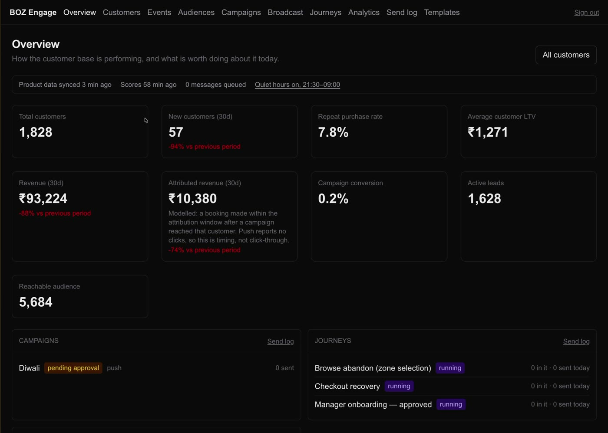
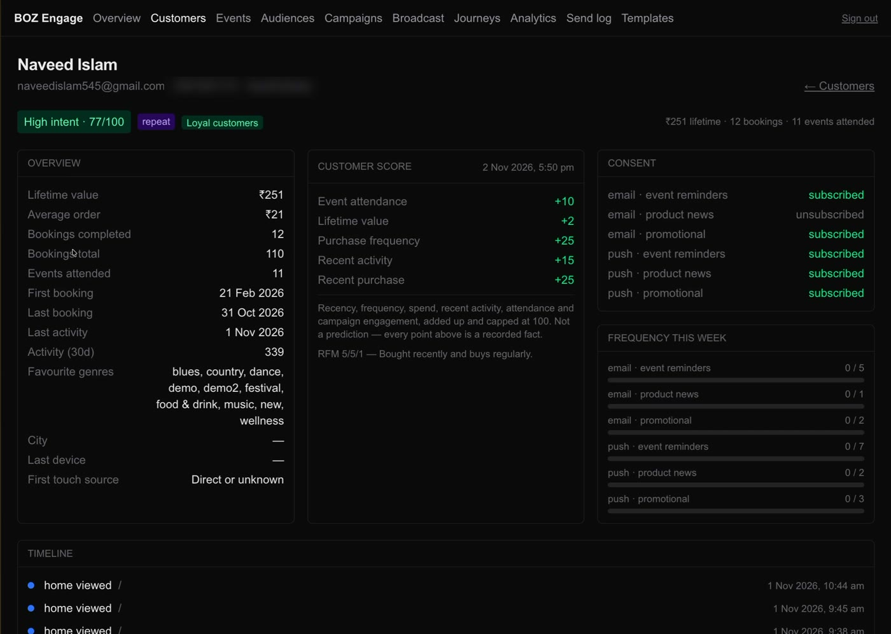

Case study 02 · In-house CRM
BOZ Engage
The customer and marketing platform behind BookOnZaatio: customers, consent, audiences, campaigns and automated journeys, in one place.

- Role
- Founder & CTO
- Platform
- Web · Next.js
- Data
- PostgreSQL
- Hosting
- Self-hosted on Coolify
Product tour · scroll to play
BOZ Engage, in motion
01 — Overview
What's worth doing today
A health strip shows how fresh the data is, then KPIs against the previous period, then the running campaigns and journeys.
02 — Events
Every event, with its buyers
Each event shows sales velocity, customer mix and attribution, plus recommended audiences with live counts and a one-click campaign.
03 — Audiences
Segments without SQL
Rules on behaviour, traits and consent, recounted on every edit, saved as audiences that campaigns and journeys reuse.
04 — Campaigns & journeys
Send once, or on a trigger
Campaigns go through approval before sending. Journeys react to what customers do, like checkout recovery and browse abandonment.
05 — Analytics
Did it work?
Revenue per campaign, sends and conversions, so every message can be judged on what it sold.
06 — Templates
Approve what the phone shows
Push copy with personalisation tokens and a device-shaped preview built from sample values.
Why build a CRM
BookOnZaatio's marketing ran on an off-the-shelf CRM plus a hand-built push admin. Neither knew enough about bookings, consent or events to answer the questions that matter for a ticketing business: who abandoned checkout, who bought last time, who is about to churn.
BOZ Engage is that CRM, built in-house. It mirrors the product data, keeps consent per channel and category, and sends push and email through the same pipeline.
What's inside
Built so a marketer can trust what it says, and see why it did what it did.
- Customer 360Score with its arithmetic shown, consent per channel, this week's frequency headroom, a unified timeline, and every message, including the ones held back and why.
- Safe audiencesSegments are stored as a rule tree and compiled to parameterised queries. Staff never type SQL, and previews return counts, never rows.
- Campaign approvalApproval covers the exact content sent. Quiet hours, frequency caps and a dedupe key mean nobody gets the same message twice.
- JourneysTrigger → wait → condition → send. Postgres is the state machine, so a crash or a deploy loses nothing, and one customer is never in two copies of a journey.
- Consent & preferencesA public preference centre on signed links and one-click unsubscribe, with consent tracked per channel and per category.
- AnalyticsCampaign revenue, acquisition by source and retention cohorts, with attribution shown as modelled, not claimed.
Customer 360
One screen for one customer: score, consent, frequency and timeline. Shown here on my own record.

Architecture
One Next.js app on Coolify, one Postgres schema. There's no separate worker: scheduled jobs are database cron entries that call worker routes, and migrations run on start.
People
StaffMarketing, ops, adminsCustomersPreference centre, one-click unsubscribeEngage app
Admin UI & staff APIRole-checked on every requestPreference centreSigned links, no loginMCP endpointTools for AI assistantsCore
CRM schema · PostgreSQLContacts, consent, segments, queue, journeysProduct syncRow triggers push, reconcile pullScheduled tickspg_cron calls worker routesChannels
PushVia the platform's edge functionEmailTransactional provider
Next project